16. Launching Clips
The Live Session View is set apart by the fact that it gives you, the musician, a spontaneous environment that encourages performance and improvisation. An important part of how you take advantage of the Session View lies within how you configure your various Session View clips. This chapter explains the group of settings used to define how each Session View clip behaves when triggered, or “launched.“
16.1 The Launch Controls
Remember that clips in the Session View are launched by their Clip Launch buttons or remote control. Clip launch settings can be found in the corresponding clip panel. The clip launch settings only apply to Session View clips, as Arrangement View clips are not launched but played according to their positions in the Arrangement.
To view the clip launch settings, open the Clip View of a Session View clip by double-clicking the clip, then click on the clip tab/panel with the Clip Launch button icon.
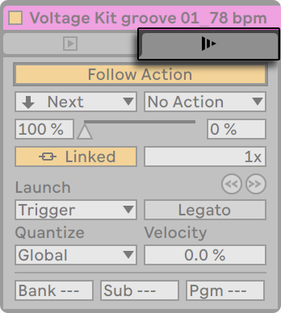
Note that you can edit the launch settings of more than one clip at the same time by first selecting the clips and then opening the Clip View.
16.2 Launch Modes
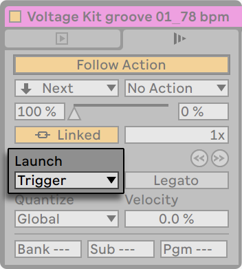
The Launch Mode chooser offers a number of options for how clips behave with respect to mouse clicks, computer keyboard actions or MIDI notes:
- Trigger: down starts the clip; up is ignored.
- Gate: down starts the clip; up stops the clip.
- Toggle: down starts the clip; up is ignored. The clip will stop on the next down.
- Repeat: As long as the mouse switch/key is held, the clip is triggered repeatedly at the clip quantization rate.
16.3 Legato Mode
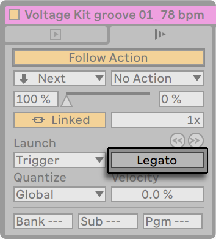
Suppose you have gathered, in one track, a number of looping clips, and you now want to toggle among them without losing the sync. For this you could use a large quantization setting (one bar or greater), however, this might limit your musical expression.
Another option, which works even with quantization turned off, is to engage Legato Mode for the respective clips. When a clip in Legato Mode is launched, it takes over the play position from whatever clip was played in that track before. Hence, you can toggle clips at any moment and rate without ever losing the sync.
Legato Mode is very useful for creating breaks, as you can momentarily play alternative loops and jump back to what was playing in the track before.
Unless all the clips involved play the same sample (differing by clip settings only), you might hear dropouts when launching clips in Legato Mode. This happens because you are unexpectedly jumping to a point in the sample that Live has had no chance to preload from disk in advance. You can remedy this situation by engaging Clip RAM Mode for the clips in question.
16.4 Clip Launch Quantization
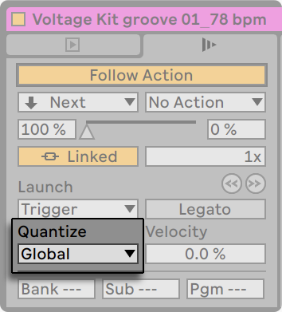
The Clip Quantization chooser lets you adjust an onset timing correction for clip triggering. To disable clip quantization, choose “None.“
To use the Control Bar’s Global Quantization setting, choose “Global.“ Global quantization can be quickly changed using the Ctrl6, 7, 8, 9, and 0 (Win) / Cmd6, 7, 8, 9, and 0 (Mac) shortcuts.
Note that any setting other than “None“ will quantize the clip’s launch when it is triggered by Follow Actions.
16.5 Velocity
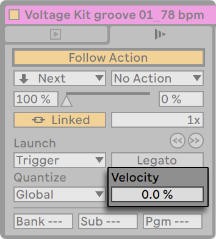
The Velocity Amount control allows you to adjust the effect of MIDI note velocity on the clip’s volume: If set to zero, there is no influence; at 100 percent, the softest notes play the clip silently. For more on playing clips via MIDI, check out the MIDI and Key Remote Control chapter.
16.6 Clip Offset and Nudging
To jump within a playing clip in increments the size of the global quantization period, you can use the Nudge Backward/Forward buttons.
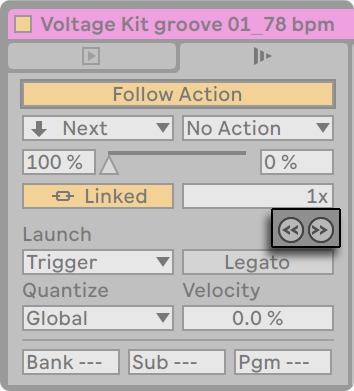
These buttons can also be mapped to keys or MIDI controllers. In MIDI Map Mode, a scrub control will appear between the Nudge Backward/Forward buttons and can be assigned to a rotary encoder wheel for continuous scrubbing.
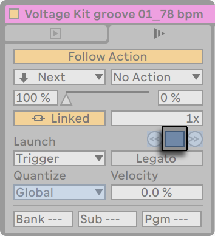
With quantization set to values less than one bar, it is easy to offset clip playback from Live’s master clock by launching clips, using the Nudge Backward/Forward buttons or scrubbing within the clip.
16.7 Follow Actions
Follow Actions can trigger clips in an orderly or random way (or both). A clip’s Follow Action defines what happens to other clips in the same group after the clip plays. A group is defined by clips arranged in successive slots of the same track. Tracks can have an unlimited number of groups, separated by empty slots.
You can also apply Follow Actions to scenes using controls in the Scene View.
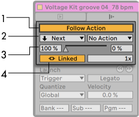
- The Follow Action button activates or deactivates Follow Actions for the selected clip or scene. This button is disabled by default, and can be toggled using the ShiftEnter keyboard shortcut.
- The Follow Action choosers allow selecting two different Follow Actions, A and B. The available Follow Actions are described in more detail below.
- The Chance A and Chance B controls set the probability (in a percentage) that each Follow Action will be triggered. If a clip or scene has Chance A set to 100% and Chance B set to 0%, Follow Action A will occur every time the clip or scene is launched. As we can see from this example, a Chance setting of 0% means that an action will never happen. Changing Chance B to 90% in this scenario makes Follow Action A occur much less often — approximately once out of every ten clip or scene launches. Note that in addition to the Chance A and Chance B controls, you can drag the slider located between them to adjust the Chance values.
- The Linked/Unlinked switch is only available for clips, and has two different modes. This switch is set to Linked by default. In Linked mode, the Follow Action is triggered at the end of the clip, or after the number of loops set in the Follow Action Multiplier field. In Unlinked mode, the Follow Action is triggered after the clip has played for the duration of the Follow Action Time. The Follow Action Time control, which is available for both clips and scenes, defines when the Follow Action takes place in bars-beats-sixteenths from the point in the clip or scene where play starts. The default for this setting is one bar. In the Sample/MIDI Notes Editor, a marker visualizes the Follow Action Time of a clip, and dragging this marker adjusts the clip’s Follow Action Time.
There are ten Follow Actions available:
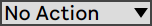
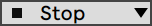
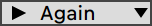
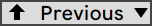
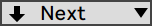
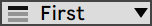
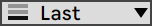
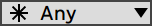
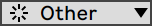
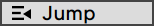
Clips and scenes with assigned Follow Actions are indicated by a striped Clip/Scene Launch button, to help you identify them more easily.
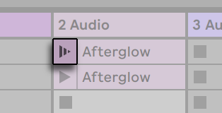
Note that a clip Follow Action happens exactly after the duration that is specified by the Follow Action Time controls unless clip quantization is set to a value other than “None“ or “Global.“ Follow Actions circumvent global quantization but not clip quantization.
Next to the Back to Arrangement button, an Enable Follow Actions Globally button lets you enable or disable all clip and scene Follow Actions in the Live Set. By disabling the Enable Follow Actions Globally button, you can edit running clips without being interrupted by playback jumping to other clips. Note that when a Live Set does not contain any clip or scene Follow Actions, the Enable Follow Actions Globally button will appear grayed out.
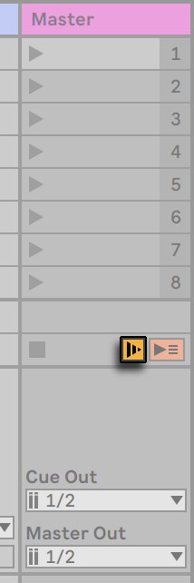
Note that Follow Actions in clips will continue to run when a scene Follow Action is created or scheduled, however Follow Actions in scenes always take precedence once they are triggered.
So why do you need Follow Actions? Music is repetition and change. Music based on loops or short melodic fragments has a tendency to sound static. Follow Actions allow you to create structures that will repeat but can also be surprising. Remember that you can always record the results of your experiments, so this can provide a good source for new material.
In the following sections we will look at some practical examples and ideas for Follow Actions.
16.7.1 Looping Parts of a Clip
Let’s say that you want to play a longer clip, but then you want only the last eight bars to loop. You can set this up using Follow Actions:
- Drag the clip into the Arrangement View and make sure that the Clip View’s Loop switch is not activated. Use the Edit menu’s Split command to split the clip between the non-looping and looping parts.
- Click and drag the resulting two clips into the Session View by letting the mouse cursor hover over the Session View selector. Drop the two clips into a track. They now form a Follow Action group.
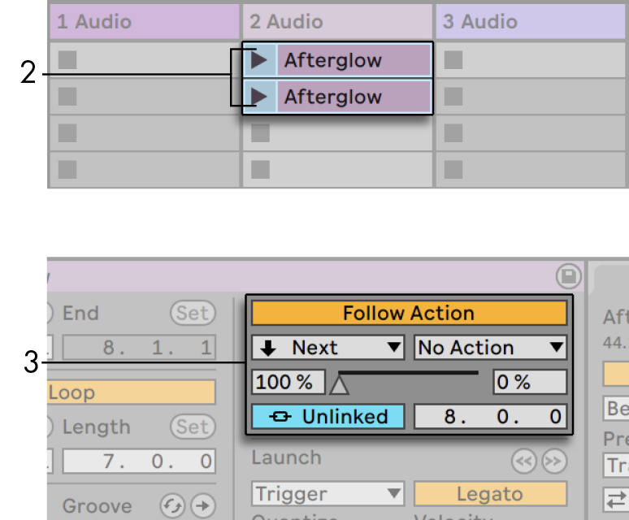
- Set up Follow Actions for the first clip. You will want to make Follow Action Time equal to the clip’s length. Set the Follow Action A chooser to “Next“, with a Chance setting of 100%, and set Follow Action B to “No Action“. Now this clip is set up to advance to the looping clip after it plays.
- Activate the Loop switch for the second clip.
The first clip will now proceed to the second after it has played in its entirety; the second clip will simply play in a loop until it is stopped.
16.7.2 Creating Cycles
One of the most obvious possibilities that Follow Actions open up is using a group of samples to form a musical cycle. If we organize several clips or scenes as a group and use the “Next“ Follow Action with each clip or scene, they will play one after the other ad infinitum, or until we tell them to stop.
Cycles can be peppered with occasional rearrangements through the addition of other Follow Actions, such as “Any,“ with smaller relative Chance settings.
You can also set up Follow Actions so that all selected clips play in a loop, by choosing the Create Follow Action Chain command from a clip’s context menu. Note that the clip selection does not have to be contiguous.
16.7.3 Temporarily Looping Clips
There are some interesting applications of Follow Actions when it comes to creating temporary musical loops.
Imagine a group consisting of one single clip. Follow Action A is set to “Play Again,“ with a Chance of 80%. Follow Action B is set to “No Action,“ with a Chance of 20%. The clip uses a long sample, and Follow Time is set to one bar. Clicking on the clip will play the first bar, after which it will be very likely that it will play the first bar again. However, after a few repetitions, it will eventually come to Action B — “No Action“ — and continue playing the rest of the sample.
Or, a clip can be played from its start to a specific point, when its Follow Action tells it to “Next.“ The same file can be used in the next clip in the group, but this one can be set to loop. This second clip can have any manner of Follow Action settings, so that it might then play forever, for a specified time or until random chance leads to the next clip in the group.
16.7.4 Adding Variations in Sync
Paired with clip envelopes and warping, Follow Actions can be used to create all sorts of interesting variations within a group of similar clips. You could, for example, use Follow Actions to randomly trigger clips with different MIDI controller clip envelopes, so that fine variations in pitch bend or modulation of an instrument or synth could occur as the clips in a group interacted. Audio clips could morph between different effect or clip transposition settings.
Using Follow Actions and Legato Mode together provides a powerful way of gradually changing a melody or beat. Imagine that you have several identical clips of a melody that form a group, and they are set up to play in Legato Mode. Whenever their Follow Actions tell them to move on to another clip in the group, the melody will not change, as Legato Mode will sync the new play position with the old one in beat-time. The settings and clip envelopes of each clip (or even the actual notes contained in a MIDI clip) can then be slowly adjusted, so that the melody goes through a gradual metamorphosis.
16.7.5 Mixing up Melodies and Beats
You can let Follow Actions perform unpredictable remixes and solos for you. Copy a clip containing a beat or melody so that there are several instances of it. Alternatively, you can use several different beats or melodies that you want to mix together. The start and end for each clip can be set differently, as can clip envelopes and other clip settings. As long as Follow Action Time in each clip is equal to the length of the clip that you want to play, you can set up two Follow Actions with different Chance values in each clip, launch a clip, and surprise yourself.
16.7.6 Creating Nonrepetitive Structures
Follow Actions are great when it comes to sound installations, as they allow you to create structures that play for weeks or months and never exactly repeat. You can set the Follow Action Time controls in a series of clips to odd intervals, and the clips will interact with each other so that they never quite play in the same order or musical position. Remember that each clip can have two different Follow Actions with corresponding Chance settings… have fun!